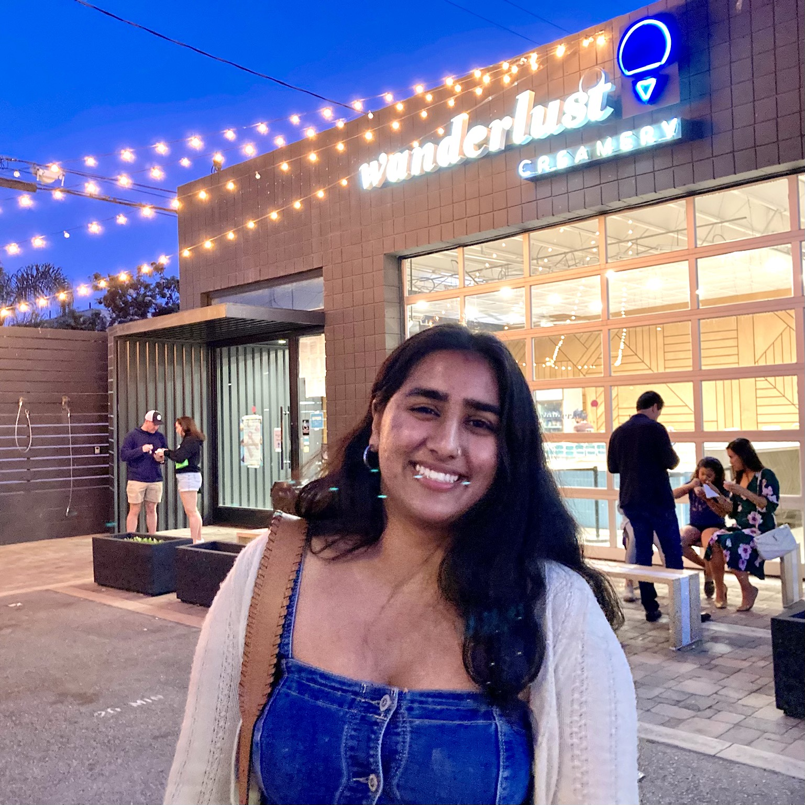

Vidisha Gupta
about
I'm currently a fourth-year undergraduate at the University of Washington, Seattle pursuing a degree in Computer Science. I will be graduating in either June or December 2024 and am looking for internships or entry-level SWE opportunities!This summer, I interned at Amazon Web Services on the S3 Object Insights team, creating a Synthetic Data Generator. I worked with multiple AWS technologies including S3, Lambda, Step Functions, DynamoDB, Eventbridge, and more. My time at AWS was a fantastic learning experience, and I'm excited to bring those skills to a new challenge.
During my time as an undergrad, I was heavily involved in student leadership at COM2 (prev. UW ACM chapter).
links
resume, LinkedIn, GitHubcontact
vidisha [at] cs.washington.edu